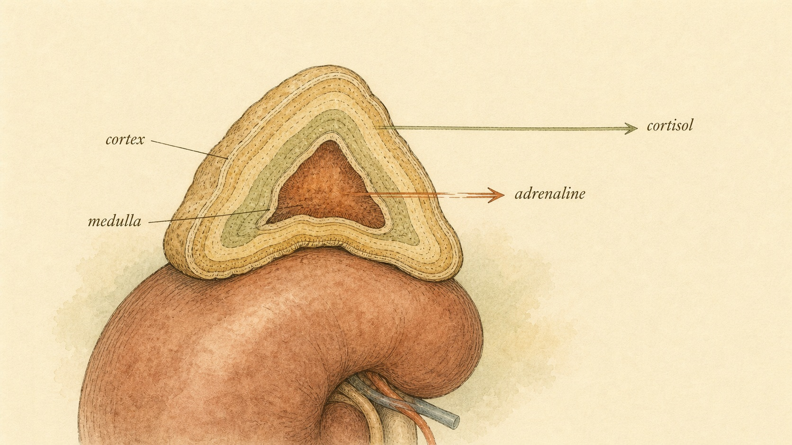
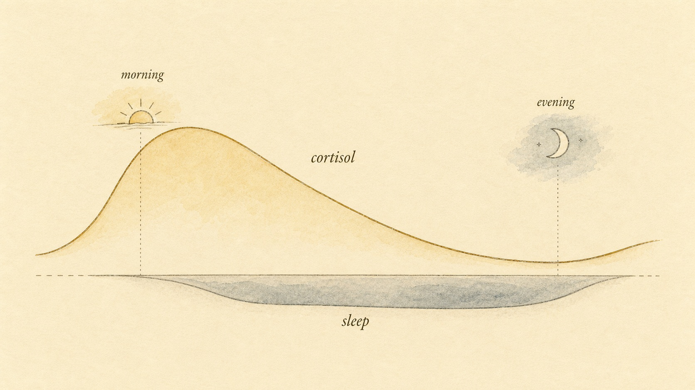
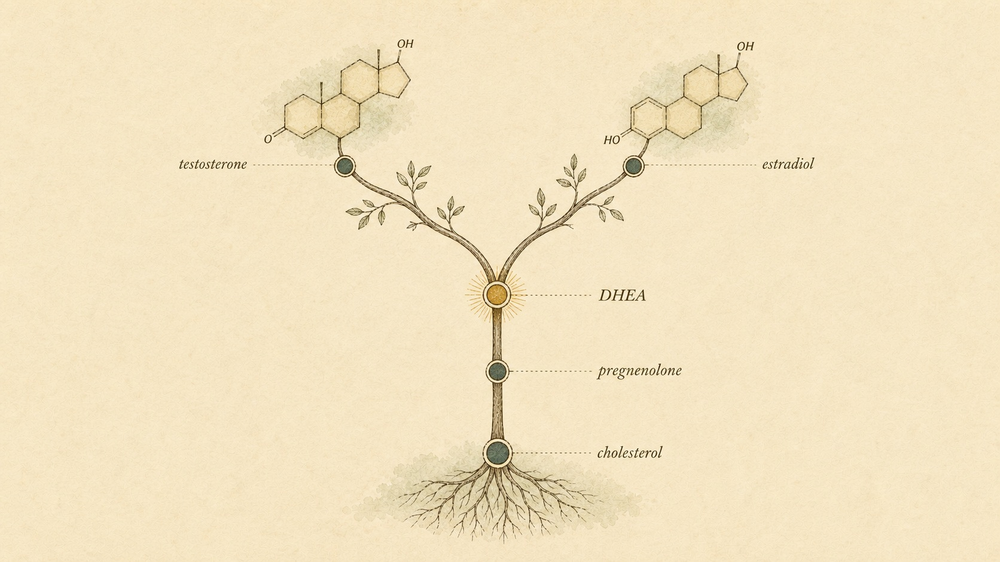

Stress Chemistry: Adrenaline, Cortisol, and the DHEA Question
Two timescales of stress, one pair of glands, a precursor that fades with age, and a hard look at the myths built on top of all of it.
A car horn blasts behind you. Before you have consciously decided anything, your heart is already pounding, your palms are damp, and your eyes have snapped to the mirror. That whole reaction took less than a second. Now imagine the slower version: you have a deadline three days out, and for those three days you sleep badly, wake at 4 a.m., crave sugar, and feel wired and tired at the same time. Same body, same general problem, completely different chemistry running on a completely different clock.
The organs behind both reactions are two small caps of tissue, each about the size of a thumb, sitting on top of your kidneys. They are the adrenal glands, and they run the stress response on two timescales at once: a fast amine that hits in seconds, and a slow steroid that rolls out over hours. Hidden inside the same factory is a third molecule almost nobody talks about, a quiet precursor called DHEA that turns out to be the bridge into everything we will cover next.
This chapter has a second job beyond the chemistry, and it is worth naming up front. The stress axis is the single most misrepresented system in the entire wellness industry. It is the home of "adrenal fatigue," of cortisol "detoxes," of saliva panels sold as windows into your soul, and of a supplement aisle that has turned two thumb-sized glands into a marketing engine. So we are going to do two things at once. We will build the real physiology carefully, and we will use that physiology as a tool for taking apart the myths that have been bolted onto it. By the end you should be able to read almost any stress-and-cortisol claim and locate exactly where it stops matching the biology.
One axis, the same template you already know
Back in Chapter 2 we built a template that every hormone system in this course obeys: a controller in the brain talks to a gland, the gland releases a messenger, the messenger acts on target tissues, and the result feeds back to shut the loop down. The stress axis is just one more instance of that template. If you understand insulin and thyroid, you already understand the shape of this. We are mostly filling in the chemistry, and then we are going to spend real time on why the popular versions of this chemistry are so often wrong.
There are actually two stress circuits, and the cleanest way to keep them straight is by speed. The fast one is the sympatho-adreno-medullary (SAM) axis. When your brain detects a threat, sympathetic nerves fire directly into the inner core of the adrenal gland, the medulla, which dumps adrenaline (epinephrine) straight into the blood. No pituitary, no slow hormonal relay. Nerve to gland to bloodstream, seconds flat (Chu et al., 2024).
The slow one is the hypothalamic-pituitary-adrenal (HPA) axis, the full Chapter 2 template. The hypothalamus releases corticotropin-releasing hormone (CRH), the pituitary releases adrenocorticotropic hormone (ACTH), and ACTH tells the outer shell of the adrenal gland, the cortex, to make cortisol. That relay takes minutes to get going and the hormone lingers for hours (Oster et al., 2016). Two axes, two speeds, one pair of glands.
Hold onto the feedback half of the template, because it is where most of the mythology quietly falls apart. The HPA axis is a closed loop. When cortisol rises, it feeds back on the hypothalamus and pituitary and tells them to ease off, the same way a thermostat shuts the furnace once the room is warm. This negative feedback is not a minor detail. It is the reason the healthy stress axis is remarkably stable and self-correcting, and it is the reason the popular image of glands that get "used up" and "run dry" is biologically backwards. A thermostat does not get tired. It gets dysregulated, or it breaks in specific, diagnosable ways. Those are different claims, and telling them apart is a large part of what this chapter is for.

Adrenaline: the fast amine
Adrenaline is the molecule that made the phone-call analogy from Chapter 1 real. Remember the distinction we drew between hormones that travel like a phone call (fast, direct, short) and hormones that travel like a letter in the mail (slow, sustained)? Adrenaline is the phone call. It is a small catecholamine, an amine built from the amino acid tyrosine, and the adrenal medulla manufactures it using an enzyme called PNMT that converts noradrenaline into adrenaline (Wong et al., 2011).
Because it is a water-soluble amine, adrenaline cannot drift through cell membranes the way a steroid can. It binds to receptors sitting on the outside of cells, the adrenergic receptors, and triggers an instant intracellular cascade. That is exactly why it is fast. There is no waiting for the molecule to enter the nucleus and change which genes get read. It flips switches that are already installed and waiting. This is a general principle worth carrying forward: a hormone's speed is set by its mechanism. Surface-receptor hormones are fast because the machinery is pre-built and idling; gene-transcription hormones are slow because they have to change what the cell is manufacturing. Adrenaline and cortisol are the two clean examples of each, made by the same gland, which is why this pair teaches the principle so well.
What does flipping those switches actually do? Within seconds it raises your heart rate and the force of each beat, widens the airways so you can pull in more oxygen, redirects blood toward muscle and away from the gut, sharpens the pupils, and, the part that matters most for this course, it mobilizes fuel. Adrenaline drives glycogenolysis, the breakdown of stored glycogen in the liver into glucose, and pushes that glucose into the blood. It also frees fatty acids from fat tissue. In one move it raises the level of immediately usable energy circulating in your bloodstream (Wong et al., 2011). Every one of those actions makes sense the moment you picture the situation the response evolved for: a sudden physical threat that you must either fight or flee within seconds. The design is not mysterious. It is a whole-body configuration for a brief burst of physical effort.
This is your first direct link back to the insulin chapter. Insulin's whole job was to lower blood glucose by storing it away. Adrenaline does the opposite in a hurry: it is a counter-regulatory signal that says spend, do not store. The two are antagonists by design. You cannot understand blood sugar by studying insulin alone, because insulin has an entire cast of opponents whose job is to raise glucose when the body decides it needs fuel now, and adrenaline is the fastest of them.
The cost of leaving the alarm on
A brief adrenaline surge is clean and adaptive. The problem is chronic activation. Wong et al. (2011) review how persistently elevated epinephrine, the kind produced by ongoing psychological stress, is linked to cardiovascular strain, immune disruption, and behavioral problems. A system tuned for a few seconds of emergency was never meant to idle in the on position for months. The heart that benefits from one hard beat during a genuine emergency does not benefit from a low-grade version of that signal running through most of a stressful year.
This is where a second concept becomes useful, one that reframes the whole discussion of chronic stress far more honestly than "adrenal fatigue" ever did. McEwen (1998) called it allostatic load: the cumulative wear and tear the body accrues when the stress mediators that protect you in the short run stay switched on in the long run. The key insight is subtle and important. The stress hormones are not the villains. They are protective and adaptive when they surge and then shut off cleanly. The damage comes from the pattern of activation, specifically from responses that are too frequent, that fail to habituate to a repeated stressor, that stay switched on after the threat is gone, or that fail in one system and force another to overcompensate (McEwen, 1998). Notice what allostatic load is not. It is not the glands wearing out. It is the price of a response that works exactly as designed but is called on far too often and never allowed to fully reset. That distinction is the difference between a real, well-evidenced model and a marketing myth, and we will lean on it hard for the rest of the chapter.
Cortisol: the slow steroid
Cortisol is a glucocorticoid, a steroid hormone built from cholesterol in the adrenal cortex. Being a steroid changes everything about how it behaves. Steroids are fat-soluble, so cortisol slips straight through cell membranes, binds a receptor inside the cell, and travels into the nucleus to change which genes get transcribed. That is a slower mechanism than adrenaline's surface switches, and it explains the timescale. Cortisol does not flip a switch; it rewrites the work order. The effect builds over minutes to hours and lingers (Chu et al., 2024).
The single most important thing to understand about cortisol, and the thing the myths ignore hardest, is that it is not only a stress hormone. It runs on a daily rhythm whether or not anything stressful happens. Oster et al. (2016) document this robust 24-hour oscillation in detail: cortisol peaks near the time you wake up, actually beginning its climb in the last hours of sleep, and falls to its lowest point in the late evening, driven by the master clock in the brain, the suprachiasmatic nucleus. That morning peak is not an accident and it is not a sign of stress. It is a scheduled signal, sometimes called the cortisol awakening response, that helps mobilize energy, sharpen alertness, and get you ready to move. If you took a single blood draw at 8 a.m. and called the high number "stress," you would be misreading a healthy, scheduled event. This is the first place a lot of cortisol testing goes wrong, and we will return to it.

What cortisol does across the day
Across hours, cortisol manages energy and inflammation. It promotes gluconeogenesis, the manufacture of new glucose in the liver, ensuring a steady fuel supply between meals and overnight. It tempers the immune system and dampens inflammation, which is exactly why synthetic glucocorticoids are prescribed as anti-inflammatory drugs. It supports cognition and the readiness to respond to challenge, and it helps maintain blood pressure (Oster et al., 2016). Where adrenaline is a sprinter emptying the fuel tank in seconds, cortisol is the logistics manager keeping the supply line stocked across the whole day. This breadth is worth pausing on. A hormone that touches metabolism, immunity, cognition, and blood pressure is not a "stress chemical" you would want to be rid of. You would die without it. The goal is never zero cortisol, and any product built on the idea that cortisol is a toxin to be flushed has misunderstood the molecule at the most basic level.
Cortisol meets insulin: the cross-talk that matters
This is where the stress story collides with the fuel story you already learned, and it is the part most people get wrong. Cortisol and insulin are not independent systems running in separate rooms. They talk to each other constantly, and the conversation can go bad.
Janssen (2022) reviews this bidirectional cross-talk carefully. In one direction, cortisol impairs insulin receptor signaling and can push tissues toward insulin resistance. Think about what that means: cortisol is raising blood glucose through gluconeogenesis while simultaneously making cells less responsive to the very hormone that is supposed to clear that glucose. In the other direction, chronically high insulin can itself drive the HPA axis toward what Janssen calls "functional hypercortisolism." Each one nudges the other in the wrong direction.
When both are chronically elevated together, the combination is worse than either alone. Janssen (2022) describes how the synergy of hyperinsulinemia and elevated cortisol promotes abdominal visceral fat and insulin resistance, the core features of metabolic syndrome. This is the molecular reason a stretch of poor sleep, high stress, and erratic eating can leave you feeling metabolically wrecked even if no single number looks alarming on its own. It is also, importantly, a story about patterns and load rather than about a gland failing. The problem is not too little cortisol from an exhausted adrenal. If anything, the metabolic trouble runs the other way, toward a chronically elevated signal cross-talking with insulin. That direction matters, because the popular narrative and the physiology point opposite ways.
The myth this chapter exists to correct: "adrenal fatigue"
Now we take the physiology we just built and use it as a scalpel, because there is a specific, popular, and wrong story about all of this that you will meet constantly, and understanding why it is wrong is one of the most useful things this chapter can give you.
The story goes like this. Chronic stress supposedly overworks your adrenal glands until they "burn out" and can no longer produce enough cortisol, leaving you fatigued, foggy, salt-craving, and dependent on caffeine, a condition marketed as adrenal fatigue. It is an intuitive story. It borrows the language of a muscle that gets tired, or a battery that runs down, and maps it onto a gland. It also sells an enormous amount of testing and supplementation. There is only one problem with it. It is not a real medical condition, and the evidence against it is unusually clear.
Cadegiani and Kater (2016) ran a systematic review specifically to test whether "adrenal fatigue" exists. They examined the studies that had been used to support the concept, looking hard at whether cortisol status actually tracked with fatigue. It did not. Across the literature, cortisol measures did not reliably correlate with fatigue, the assessment methods used to "diagnose" adrenal fatigue were methodologically weak and inconsistent, and there was no substantiation that the condition is real. Their conclusion is blunt: adrenal fatigue is a myth. Crucially, they also concluded that the cortisol profile tests marketed for it have no clinical utility in evaluating fatigue and should not be used to justify treatment (Cadegiani & Kater, 2016). No endocrinology society recognizes adrenal fatigue as a diagnosis, which is not a small omission. These are the same professional bodies that define and diagnose every other adrenal condition.
Line the claim up against the physiology and you can see exactly why it fails. First, the HPA axis has negative feedback built in; it is self-correcting, not a reservoir that empties. Second, the model predicts that chronically stressed people should show low cortisol from "exhausted" glands, but that is not the consistent picture the data show, and where metabolic harm from chronic stress appears, it tends to involve elevated or dysregulated cortisol cross-talking with insulin, not a simple deficiency (Janssen, 2022). Third, the allostatic-load framework already explains the real phenomenon, the genuine wear that chronic stress produces, without needing to invent tired glands (McEwen, 1998). The symptoms people experience are real. The explanation sold to them is not.
Here is the part that requires care, and it is the reason this myth is dangerous rather than merely wrong. There is a real, serious, diagnosable condition in which the adrenal glands genuinely cannot make enough cortisol. It is called adrenal insufficiency, and its primary autoimmune form is Addison's disease (Munir et al., 2024). It is not common, but it is potentially life-threatening, and it presents with fatigue, weight loss, low blood pressure, salt craving, and characteristic skin darkening. It is diagnosed with specific tests, most importantly an ACTH stimulation test, and it is treated with hormone replacement under a clinician's care (Munir et al., 2024). The tragedy of the adrenal-fatigue narrative is that it can do two kinds of harm at once. It can convince a person with real Addison's disease that they have a mild "fatigue" problem fixable with an adaptogen, delaying the diagnosis of a dangerous condition. And it can convince a person with ordinary, load-related tiredness that they have a broken gland, sending them toward unnecessary and sometimes risky treatments, including cortisol-containing products that can suppress a perfectly healthy axis.
The testing trap: why a saliva cortisol panel is not a diagnosis
If adrenal fatigue is not real, why do so many people have a lab report that seems to show it? The answer is a lesson in how a real measurement can be turned into a fake diagnosis, and it is worth walking through slowly because the same trick appears all over hormone marketing.
Cortisol is genuinely measurable, and salivary cortisol in particular is a legitimate clinical tool. Late-night salivary cortisol is one of the first-line screening tests the Endocrine Society endorses for diagnosing Cushing's syndrome, the condition of pathological cortisol excess, precisely because the late-night value is normally very low and a stubbornly high one is a meaningful red flag (Nieman et al., 2008). So the measurement itself is not the problem. The problem is what gets done with it.
The wellness version takes several cortisol readings across a day, plots them into a curve, and then interprets any deviation from an idealized shape as "dysfunction," typically labeled as a stage of adrenal fatigue. This looks scientific. It fails for reasons that follow directly from the physiology you now know. Cortisol has a large, normal daily rhythm and considerable day-to-day and person-to-person variation, so a single day's curve captures a lot of noise. The rhythm is exquisitely sensitive to sleep timing, waking time, recent meals, exercise, and even the stress of doing the test, so a "flat" or "off" curve can reflect a late night rather than a broken gland. And critically, the systematic review found that these cortisol profiles do not correlate with fatigue and have no clinical utility for it (Cadegiani & Kater, 2016). A test can be real, reproducible, and useful for one purpose, screening for genuine cortisol excess under a clinician, while being meaningless for the purpose it is being sold for.
The clinical world uses cortisol testing under tight conditions and clear questions. The Endocrine Society guideline is explicit that testing for Cushing's syndrome should target people with a real pretest suspicion, should use validated tests, and should require confirmation, because even good tests produce false positives when you screen the wrong population (Nieman et al., 2008). That last point is the quiet key to the whole testing trap. Run a slightly-imperfect test on a large number of worried but healthy people and you will manufacture a steady stream of "abnormal" results, each one an opportunity to sell an explanation and a remedy. The result is not information. It is a funnel.
Notice what the widget shows if you step through a brief stressor: adrenaline is already near its peak at ten seconds and mostly gone by twenty minutes, while cortisol barely gets started before the brief event resolves. Run the prolonged version and the shapes separate cleanly. Adrenaline still spikes and fades early, but now cortisol climbs through the first hour and stays elevated. The glucose track stays propped up the whole time because both hormones are pushing fuel into the blood. That sustained glucose elevation, paired with cortisol blunting insulin, is the Janssen (2022) cross-talk happening in real time.
There is a second lesson hiding in the widget, and it connects straight to the myth we just dismantled. Watch what cortisol does even in the prolonged run: it rises and stays elevated. It does not collapse. Nothing in the real short-term physiology produces the "exhausted, depleted, low-output" gland that the adrenal-fatigue story requires. If anything, the honest picture of chronic activation looks more like the prolonged curve refusing to come down, which is allostatic load, not depletion (McEwen, 1998). The widget is a simplification, but it is faithful on the point that matters: the direction of the real problem is a signal that will not reset, not a gland that has run dry.
The distinctive part: DHEA and the precursor idea
Now we get to the molecule this chapter exists to introduce, and the reason this chapter is a hinge in the course. The adrenal cortex does not only make cortisol. In its innermost layer, the zona reticularis, it manufactures large amounts of DHEA (dehydroepiandrosterone) and its storage form DHEA-S (the sulfated version). In fact DHEA and DHEA-S are the most abundant steroid hormones in the human body (Samaras et al., 2013).
Here is the key concept, and it is worth slowing down for, because it reframes everything that comes next in the course. DHEA is a precursor. It is not the final actor. It is the raw material. By itself DHEA is a weak androgen, but the body can convert it downstream into the potent sex hormones: testosterone and estradiol. DHEA sits upstream of the entire sex-hormone story.
Let me make "upstream" concrete. Every one of these steroids is built from cholesterol along a branching assembly line. Cholesterol becomes pregnenolone, and through an enzyme called CYP17A1 the pathway proceeds toward DHEA in the zona reticularis (Lin et al., 2025). From DHEA, downstream tissues can then build testosterone, and from testosterone they can build estradiol. The molecule is literally a fork in the road: depending on which enzymes a tissue has, DHEA gets converted one way or another. This is the same branching-assembly-line logic that governs every steroid hormone, and once you see it here you will recognize it everywhere in the endocrine system: a shared cholesterol backbone, a series of enzymatic steps, and tissues that pick up an intermediate and finish it into whatever they are equipped to make.

Intracrinology: the conversion happens out in the tissues
One subtle but important point. The conversion of DHEA into active sex hormones does not all happen back in the gland. Much of it happens locally, inside peripheral target tissues, in a process called intracrinology (Samaras et al., 2013). A tissue takes up circulating DHEA and, using its own enzymes, builds exactly the androgen or estrogen it needs, uses it on the spot, and breaks it down before it ever re-enters the blood. Labrie et al. (1997) showed that in women, the majority of androgens originate from this peripheral transformation of DHEA and DHEA-S. The gland ships the raw material; the neighborhood does the final assembly.
Intracrinology also quietly explains a puzzle that trips people up when they try to reason from a lab value. If tissues make and use and destroy their own sex hormones locally, then a blood level of DHEA is only the starting inventory, not the finished product in any given tissue. Two people can carry the same circulating DHEA and end up with quite different local levels of active testosterone or estradiol, depending on which enzymes their tissues express. This is one more reason to be humble about reading a single hormone number off a panel and declaring what is happening inside the body. The blood tells you about supply. It does not tell you what each neighborhood built with it.
DHEA's decline with age: one of the most reliable hormonal changes there is
The second reason DHEA matters is that its decline with age is one of the cleanest, most reproducible hormonal trends across the human lifespan. DHEA peaks in your twenties and then falls steadily for the rest of your life. Yiallouris et al. (2019) put the rate at roughly 1 to 2 percent per year, producing a 5 to 10 fold decrease over a lifetime, a phenomenon distinct enough to earn its own name: adrenopause.
The numbers from the primary literature are striking. Labrie et al. (1997) found that by the 50 to 60 year age group, serum DHEA had already fallen by about 74 percent in men and 70 percent in women relative to peak values. Samaras et al. (2013) describe levels dropping to as low as 10 to 20 percent of youthful values in later life. This is a large, predictable change, larger than most hormone shifts you will read about.
Now contrast that with cortisol. While DHEA collapses with age, cortisol is relatively preserved (Yiallouris et al., 2019). The same gland holds one product roughly steady while letting the other fade away. Lin et al. (2025) note that this changing balance, sometimes tracked as the DHEA-to-cortisol ratio, has been studied as a stress biomarker, and that acute stress itself shifts adrenal steroid production away from the DHEA pathway and toward cortisol. The factory can re-prioritize: under demand, it makes more of the catabolic stress steroid and less of the anabolic precursor. Notice that this is a very different mechanism from "wearing out." The gland is not failing; it is reallocating, choosing which product to emphasize based on demand and age. A factory that changes its product mix is not the same as a factory that has broken down.
Why this links the adrenal and gonadal stories
Here is where the hinge swings forward into the next chapters. If DHEA is the upstream raw material for sex hormones, then as DHEA fades, the downstream pool it can feed is constrained too. This matters enormously in later life. Yiallouris et al. (2019) explain that in older adults, after the gonads have wound down their own output, peripheral conversion of DHEA and DHEA-S becomes the primary source of sex hormones. The adrenal precursor you have been ignoring becomes the main supplier exactly when the gonads step back. That is why you cannot tell the sex-hormone story without first telling the adrenal one.
Drag the age control toward 80 and watch all three bars drop together, even though you only directly lowered the DHEA supply. That is the whole point of a precursor: constrain the raw material and you constrain everything built from it. The widget is a deliberate oversimplification (real downstream levels depend on gonadal output and local enzyme activity too), but it captures the logic you will need in the next chapters.
A case to tie it together
Abstract principles are easy to nod along to and hard to apply, so let us make this concrete with one person, because almost everything in this chapter converges on a scenario you will meet again and again.
Walk Simone through the lens this chapter built. First, the label. "Adrenal fatigue" is not a diagnosis that survived systematic review, and the cortisol curve she paid for has no demonstrated clinical utility for fatigue (Cadegiani & Kater, 2016). The curve looking "off" is expected: cortisol has a large normal rhythm sensitive to her 4 a.m. wakings, her caffeine, and her erratic sleep, so a single wellness panel captures mostly noise. Second, the real physiology. Her symptoms are genuine, and they fit allostatic load far better than gland depletion: a chronically activated system that is not resetting, driven by short sleep and sustained strain, with cortisol-insulin cross-talk plausibly feeding the sugar cravings and the wired-tired feeling (McEwen, 1998; Janssen, 2022). Nothing here requires an exhausted gland, and the direction of the metabolic story runs toward dysregulated or elevated signaling, not deficiency.
Third, and this is the part that keeps a learner honest, some of Simone's symptoms overlap with a real disease. Fatigue, weight change, salt craving, and low blood pressure are also how adrenal insufficiency and Addison's disease can present (Munir et al., 2024). That overlap is precisely why the wellness label is hazardous: it can paper over a serious condition with a reassuring story. The responsible move is not to counter-diagnose Simone with anything. It is to recognize that persistent, unexplained symptoms like these are signs that warrant medical evaluation, and that only a clinician can order the right tests, an ACTH stimulation test rather than a saliva-curve panel, to rule a real condition in or out (Munir et al., 2024; Nieman et al., 2008). And the DHEA capsule in her stack is not a benign vitamin; it is a hormone precursor with downstream effects, another reason this belongs with a clinician.
What can a learner do with Simone's situation without stepping over any line? Understand the physiology well enough to recognize that the "adrenal fatigue" framing is unsupported, that the fundamentals she is skipping (sleep timing, load management, regular meals) are exactly the levers the real science points to, and that her constellation of persistent symptoms deserves a clinician's evaluation rather than a supplement funnel. That is the whole role: understand the system, respect the boundary, point toward real care when the picture calls for it.
Putting the three molecules side by side
Step back and you have three products from one pair of glands, each illustrating a different lesson from this course. Adrenaline is the fast amine: a phone-call-speed catecholamine that mobilizes fuel in seconds and clears fast, the counterweight to insulin (Wong et al., 2011). Cortisol is the slow steroid: a glucocorticoid on a daily rhythm that manages energy and inflammation across hours and cross-talks with insulin in ways that can tip toward metabolic trouble (Oster et al., 2016; Janssen, 2022). DHEA is the precursor: abundant raw material, weak on its own, converted downstream into the sex hormones, and one of the most reliable declines in all of human endocrinology (Samaras et al., 2013; Yiallouris et al., 2019).
Fast, slow, and upstream. If you hold those three words, you hold the chemistry. And if you hold one more idea alongside them, you hold the chapter: the healthy stress axis is a self-correcting loop, so the real risks are dysregulation and cumulative load (McEwen, 1998), and the genuine diseases of these glands are diagnosed by clinicians, never by the myths and panels built to look like medicine (Cadegiani & Kater, 2016; Munir et al., 2024; Nieman et al., 2008).
The adrenal does not make a single decision under stress. It runs two clocks and quietly re-prioritizes a third pathway, shifting raw material away from the anabolic precursor and toward the catabolic stress steroid. It does not, whatever the label promises, simply run out.
Synthesis of Lin et al. (2025), Chu et al. (2024), and Cadegiani & Kater (2016)
Key Takeaways
- The adrenal glands run two stress circuits at once: the fast SAM axis (nerve to medulla to adrenaline, seconds) and the slow HPA axis (the full Chapter 2 template producing cortisol, minutes to hours), and the HPA axis has built-in negative feedback that makes it self-correcting, not a reservoir that empties.
- Adrenaline is a catecholamine that acts on surface receptors, which is why it is fast; it mobilizes glucose and fat into the blood, acting as a direct counter-regulator to insulin.
- Cortisol is a steroid that changes gene transcription, which is why it is slow; it runs a daily rhythm peaking near waking and supports energy, immune regulation, cognition, and blood pressure across the day, so it is not a toxin to be flushed.
- The genuine harm of chronic stress is best described as allostatic load, cumulative wear from a response that stays switched on, not as glands that get "used up" (McEwen, 1998).
- "Adrenal fatigue" is not a recognized medical diagnosis; a systematic review found no evidence for it and no clinical utility in the cortisol panels sold to diagnose it (Cadegiani & Kater, 2016). Real adrenal disease exists, such as Addison's disease and Cushing's syndrome, and is diagnosed by clinicians with specific endocrine testing (Munir et al., 2024; Nieman et al., 2008).
- DHEA is an abundant adrenal precursor, not a final hormone; it is converted downstream into testosterone and estradiol, often locally inside tissues (intracrinology), so a blood DHEA level reflects supply, not what each tissue built.
- DHEA declines about 1 to 2 percent per year (adrenopause), falling to roughly 10 to 20 percent of peak values in old age, while cortisol stays relatively preserved; this links the adrenal and sex-hormone stories and reflects reallocation, not gland failure.
We have left DHEA standing at the fork in the road, holding the raw material for testosterone and estradiol. Next we follow that branch downstream into the sex hormones themselves: what the gonads add, how the same precursor logic plays out, and why "upstream versus active" is the distinction that makes the whole system make sense. We will also carry forward the myth-reading skill you built here, because the sex hormones attract at least as much confident marketing as the adrenals do.
References
Cadegiani, F. A., & Kater, C. E. (2016). Adrenal fatigue does not exist: A systematic review. BMC Endocrine Disorders, 16(1), 48. https://doi.org/10.1186/s12902-016-0128-4
Chu, B., Marwaha, K., Sanvictores, T., & Ayers, D. (2024). Physiology, stress reaction. StatPearls. https://www.ncbi.nlm.nih.gov/books/NBK541120/
Janssen, J. A. M. J. L. (2022). New insights into the role of insulin and hypothalamic-pituitary-adrenal (HPA) axis in the metabolic syndrome. International Journal of Molecular Sciences, 23(15), 8178. https://doi.org/10.3390/ijms23158178
Labrie, F., Bélanger, A., Cusan, L., Gomez, J. L., & Candas, B. (1997). Marked decline in serum concentrations of adrenal C19 sex steroid precursors and conjugated androgen metabolites during aging. The Journal of Clinical Endocrinology & Metabolism, 82(8), 2396-2402. https://doi.org/10.1210/jcem.82.8.4160
Lin, H., et al. (2025). The sex hormone precursors dehydroepiandrosterone (DHEA) and its sulfate ester form (DHEAS): Molecular mechanisms and actions on human body. International Journal of Molecular Sciences, 26(17), 8568. https://doi.org/10.3390/ijms26178568
McEwen, B. S. (1998). Protective and damaging effects of stress mediators. The New England Journal of Medicine, 338(3), 171-179. https://doi.org/10.1056/NEJM199801153380307
Munir, S., Quintanilla Rodriguez, B. S., & Waseem, M. (2024). Addison disease. StatPearls. https://www.ncbi.nlm.nih.gov/books/NBK441994/
Nieman, L. K., Biller, B. M. K., Findling, J. W., Newell-Price, J., Savage, M. O., Stewart, P. M., & Montori, V. M. (2008). The diagnosis of Cushing's syndrome: An Endocrine Society clinical practice guideline. The Journal of Clinical Endocrinology & Metabolism, 93(5), 1526-1540. https://doi.org/10.1210/jc.2008-0125
Oster, H., Challet, E., Ott, V., Arvat, E., de Kloet, E. R., Dijk, D. J., Lightman, S., Vgontzas, A., & Van Cauter, E. (2016). The functional and clinical significance of the 24-hour rhythm of circulating glucocorticoids. Endocrine Reviews, 38(1), 3-45. https://doi.org/10.1210/er.2015-1080
Samaras, N., Samaras, D., Frangos, E., Forster, A., & Philippe, J. (2013). A review of age-related dehydroepiandrosterone decline and its association with well-known geriatric syndromes: Is treatment beneficial? Rejuvenation Research, 16(4), 285-294. https://doi.org/10.1089/rej.2013.1425
Wong, D. L., Tai, T. C., Wong-Faull, D. C., Claycomb, R., Meloni, E. G., Myers, K. M., Carlezon, W. A., & Kvetnansky, R. (2011). Epinephrine: A short- and long-term regulator of stress and development of illness. Cellular and Molecular Neurobiology, 32(5), 737-748. https://doi.org/10.1007/s10571-011-9768-0
Yiallouris, A., Tsioutis, C., Agapidaki, E., Zafeiri, M., Agouridis, A. P., Ntourakis, D., & Johnson, E. O. (2019). Adrenal aging and its implications on stress responsiveness in humans. Frontiers in Endocrinology, 10, 54. https://doi.org/10.3389/fendo.2019.00054